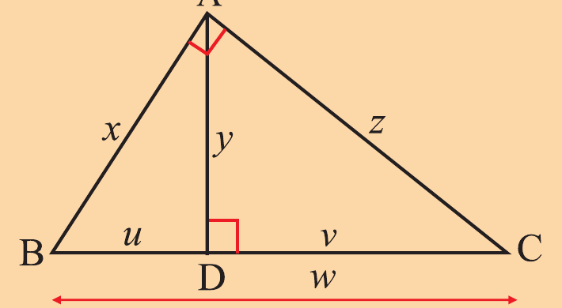
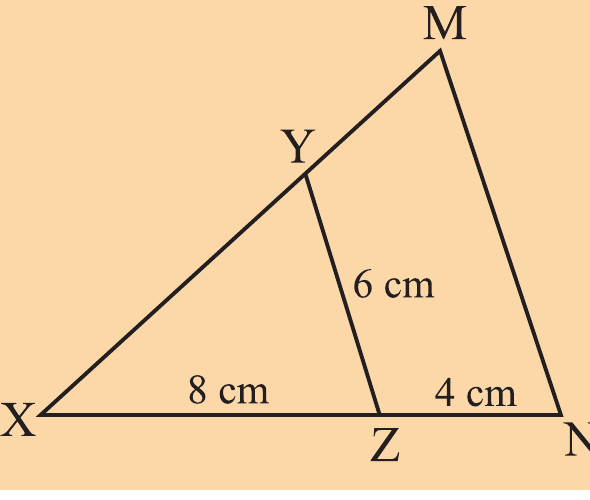
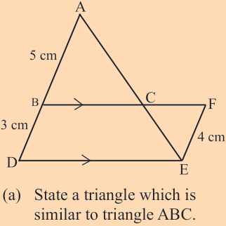
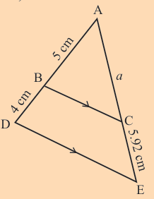
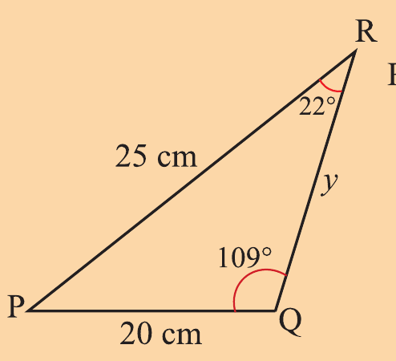
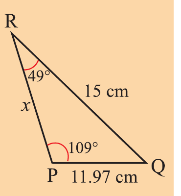

Similarity
In the following figure, △ABC is a right-angled at A and AD is an altitude.

(a) Name with reasons, two triangles which are similar to △ABD
(b) Show that , , and .
(c) If AB = 40 cm, AC = 30 cm, BC = 50 cm, calculate AD, BD, and CD.
A man wishes to find the width of a river.
There is a post at A on the far bank directly opposite post B and another at E so that A, C, and E align with each other, with ED being at the right angles with the bank.
BC, DC, and DE are measured and found to be 117 m, 26 m, and 16 m, respectively.
Find the width of the river.
In the following figure, find the proportionality constant between similar triangles and the length of side NM.

Study the following figure and answer the questions that follow.

(a) State a triangle which is similar to triangle ABC.
(b) Calculate the constant of proportionality between triangles identified in part (a).
Find the value of a in the following figure,

Use the following figures to show that △RPQ ∼ △ABC and hence calculate the values of x and y.

